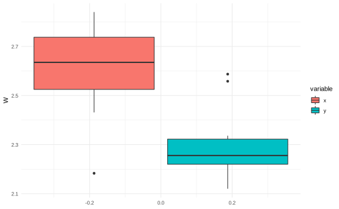

Capítulo 4 Estimación por máxima verosimilitud
¿Será posible estimar sin una densidad previa? Se debería ajustar la noción de muestra a independencia dado el valor de un parámetro.
Recuerde que, para \(X_1,\dots, X_n \stackrel{i.i.d}{\sim} f(X|\theta)\) con \(\theta\) fijo, la función de verosimilitud se define como \[ f_n(X|\theta) = \pi(X_i|\theta) = G(\theta|X).\]
Si \(\theta_1,\theta_2\in \Omega\), \(\theta\) es el valor real del parámetro. Si la muestra es fija, evaluamos, para \(\theta_1\), \(f_n(X|\theta_1) = L(\theta_1|X)\) y, de igual forma para \(\theta_2\), \(f_n(X|\theta_2) = L(\theta_2|X)\). Supongamos que
\[\begin{equation*} f_n(X|\theta_1) >f_n(X|\theta_2) \implies L(\theta_1|X)>L(\theta_2|X) \text{ (principio de verosimilitud)} \end{equation*}\]
Interpretación. Es más verosímil (realista) que el verdadero parámetro sea \(\theta_1\) que \(\theta_2\) dada la muestra.
Definición. Para cada \(x\in \mathcal{X}\) (espacio muestral), sea \(\delta(x) \in \delta\) estimador de \(\theta\) tal que \(f_n(x|\theta)\) es máximo. A \(\delta(x)\) se le llama MLE (estimador de máxima verosimilitud).
Ejemplo. Si \(X_1,\dots, X_n \sim \text{Exp}(\theta)\), estime \(\theta\).
Determinamos la función de verosimilitud,
\[\begin{equation*} f_n(X|\theta) = \prod_{i=1}^n \dfrac{1}\theta e^{-X_i/\theta} = \dfrac1{\theta^n} \exp\left(\dfrac{1}\theta \sum_{i=1}^nX_i\right) = \theta^{-n}e^{-y/\theta}. \end{equation*}\]
Considere la log-verosimilitud \[\begin{equation*} \ell(\theta|X) = \ln f_n(X|\theta) = -n\ln \theta - \dfrac{y}{\theta} \end{equation*}\]
Como es una transformación monótona creciente, la función de verosimilitud se maximiza si la log-verosimilitud es máxima. Entonces,
\[\begin{align*} \dfrac{\partial}{\partial\theta} \ell(\theta|X) & = \dfrac{-n}{\theta}+\dfrac{y}{\theta^2} = 0 \\ \implies \dfrac{1}{\theta}\left(-n+\dfrac{y}\theta\right) & =0 \\ \implies \hat\theta = \dfrac{y}{n} & = \bar X_n. \end{align*}\]
Para verificar que es un máximo:
\[\dfrac{\partial^2 \ell}{\partial\theta^2} = \left. \dfrac{n}{\theta^2} -\dfrac{2y}{\theta^3}\right\vert_{\theta = \frac{y}{n}} = \dfrac{1}{\hat\theta^2} \bigg[n-\dfrac{2y}{\frac yn}\bigg] = \dfrac{-n}{\hat\theta^2} < 0.\]
Entonces \(\hat\theta = \bar X_n\) es el MLE de \(\theta\).
Laboratorio:
Suponga que se tiene 100 valores con distribución exponencial con parámetro \(\theta=1\).


Ejemplo. En una prueba sobre alguna enfermedad, en un \(90\%\) da la verdadera condición (enfermo) y en un \(10\%\) la prueba se equivoca (que diga que la persona esté enferma cuando está sana). Considere una variable aleatoria \(\text{Bernoulli}(\theta)\),\(\theta \in \{0.9,0.1\}\) Una muestra sería \[x = \begin{cases}1 & \text{si la prueba es positiva}\\0& \text{si no}\end{cases}\] Si \(x=0\), entonces \(f(0|\theta) = \begin{cases}0.9 & \text{si }\theta = 0.1\\0.1& \text{si }\theta = 0.9\end{cases}\).
Si \(x=1\), entonces \(f(1|\theta) = \begin{cases}0.1 & \text{si }\theta = 0.1\\0.9& \text{si }\theta = 0.9\end{cases}\).
El MLE corresponde a \[\hat\theta = \begin{cases}0.1 & \text{si }x= 0\\0.9& \text{si }x= 1\end{cases}\]
Ejemplo. Para el caso normal, \(X_1,\dots, X_n \sim N(\mu,\sigma^2)\), \(\sigma^2\) conocida, estime \(\mu\).
\[f_n(x|\mu) = \prod_{i=1}^n \dfrac{1}{\sqrt{2\pi\sigma^2}}\exp\left(-\dfrac{(x_i-\mu)^2}{2\sigma^2}\right) = (2\pi\sigma^2)^{-n/2}\exp\left(-\dfrac1{2\sigma^2}\sum_{i=1}^n(x_i-\mu)^2\right).\]
La log-verosimilitud es de la forma \[ \ell(\mu|x) = \dfrac{-n}{2}\ln(2\pi\sigma^2)-\dfrac1{2\sigma^2}\sum_{i=1}^n(x_i-\mu)^2.\]
Basta con minimizar \(Q(\mu) = \sum_{i=1}^n(x_i-\mu)^2\).
\[ \dfrac{\partial Q}{\partial\mu} = -2\sum_{i=1}^n(x_i-\mu) \implies n\mu = \sum_{i=1}^nx_i \implies \hat\mu = \bar x_n.\]
No hace falta verificar la condición de segundo orden, pues \(Q\) es una función cuadrática de \(\mu\) y tiene un único máximo.
\[ \hat\mu_{MLE} = \bar x_n \quad (*)\]
Ahora, si \(X_1,\dots, X_n \sim N(\mu,\sigma^2)\), \(\theta = (\mu,\sigma^2)\) desconocido, por \((*)\),
\[ \ell(\sigma^2|X_1,\dots, X_n) = \dfrac n2 \ln(2\pi\sigma^2)--\dfrac1{2\sigma^2}\sum_{i=1}^n(x_i-\bar x_n)^2 \]
\[ \dfrac{\partial L}{\partial\sigma^2} = -\dfrac n2 \dfrac1{2\pi\sigma^2} + \dfrac1{2(\sigma^2)^2} \sum_{i=1}^n(x_i-\bar x_n)^2= 0 \] Entonces \[ \sigma^2 = \dfrac 1n \sum_{i=1}^n(x_i-\mu)^2 \text{ (varianza muestral)}\]
Las condiciones de segundo orden quedan como ejercicio.
Nota. Si \(\theta_{MLE}\) de \(\theta\), entonces \(h(\theta_{MLE})\) es el MLE de \(h(\theta)\).
Sea \(h(x,y) = \sqrt{y}\) (es inyectiva). \(h(\bar x_n, \hat\sigma^2) = \sqrt{\hat\sigma^2} = \hat\sigma\).
El MLE de \(\dfrac{\sigma}{\mu} = \dfrac{\hat \sigma}{\bar x_n}\).
Laboratorio:
library(scatterplot3d)
x <- rnorm(100)
n <- length(x)
mu <- seq(-0.5, 0.5, length.out = 50)
sigma <- seq(0.5, 1.5, length.out = 50)
ms <- expand.grid(sigma, mu)
l <- -(n / 2) * log(2 * pi / ms[, 1]^2) - (1 / (2 * ms[, 1]^2) * sum((x - ms[, 2])^2))
scatterplot3d(ms[, 1], ms[, 2], l, angle = 45)
Ejemplo. \(X_1,\dots, X_n \stackrel{i.i.d}{\sim} \text{Unif}(0, \theta)\). Estime \(\theta\) \((\theta > 0)\). Suponga que \(x_i>0 \forall i\).
\[f(X|\theta) = \dfrac 1\theta \cdot 1_{[0,\theta]}(x)\]
La verosimilitud es \[f_n(x|\theta) = \prod_{i=1}^{n} f(x_i|\theta) = \dfrac 1{\theta^n} \prod_{i=1}^n 1_{\{0\leq X_i\leq \theta\}} \quad 0\leq X_i \leq \theta \;\forall i\]
Vea que \(f_n(x|\theta)\) es válido si y solo si \(0\leq X_{(n)}\leq \theta\).
El valor de la muestra \(\{X_1,\dots, X_n\}\) en la \(i\)-ésima posición cuando los datos se ordenan de menor a mayor se denota \(X_{(i)}\) (estadístico de orden). En este caso, \(X_{(n)} = \max\{X_1,\dots, X_n\}\). Entonces \(\hat\theta_{MLE} = x_{(n)}\).
Laboratorio:
x <- runif(100, 0, 2)
n <- length(x)
theta <- seq(1.5, 2.5, length.out = 1000)
L <- numeric(1000)
for (k in 1:1000) {
L[k] <- 1 / theta[k]^n * prod(x < theta[k])
}
plot(theta, L)
4.1 Propiedades del MLE
4.1.1 Propiedad de invarianza
Teorema. Si \(\hat\theta\) es el MLE de \(\hat\theta\) y si \(g\) es biyectiva, entonces \(g(\theta)\) es el MLE de \(g(\theta)\).
Prueba:
Sea \(\Gamma\) el espacio paramétrico \(g(\Omega)\). Como \(g\) es biyectiva entonces defina \(h\) la inversa de \(g\colon \theta = h(\psi), \psi \in \Gamma\).
Reparametrizando la verosimilitud, \[f_n(x|\theta) = f_n(x|h(\psi)). \]
El MLE de \(\psi:\hat\psi\) satisface que \(f_n(x|h(\hat\psi))\) es máximo.
Como \(f_n(x|\theta)\) se maximiza cuando \(\theta = \hat \theta\), entonces \(f_n(x|h(\psi))\) se maximiza cuando \(\hat \theta = h(\psi)\) para algún \(\psi\).
Se concluye que \(\hat\theta = h(\hat\psi) \implies \hat\psi = g(\hat \theta)\).
Ejemplo: \(g(\theta) = \dfrac 1\theta\) es biyectiva si \(\theta > 0\). Así,
\[\begin{equation*} \frac{1}{\hat{\theta}} = \frac{1}{\frac{1}{\bar{X}_n}} = \bar{X}_n \text{ es parámetro de la tasa.} \end{equation*}\]
¿Qué pasa si \(h\) no es biyectiva?
Definicion (Generalización del MLE). Si \(g\) es una función de \(\theta\) y \(G\) la imagen de \(\Omega\) bajo \(g\). Para cada \(t\in G\) defina \[ G_t = \{\theta: g(\theta) = t\}\] Defina \(L^*(t) = \displaystyle\max_{\theta\in G_t} \ln f_n(x|\theta)\). El MLE de \(g(\theta) (=\hat t)\) satisface \(L^*(\hat t) = \displaystyle\max_{t \in G} L^*(t)\).
Teorema. Si \(\hat \theta\) es el MLE de \(\theta\) entonces \(g(\hat\theta)\) es el MLE de \(g(\theta)\) (\(g\) es arbitraria).
Prueba. Basta probar \(L^*(\hat t) = \ln f_n(x|\hat \theta)\). Se cumple que \(\hat\theta\in G_{\hat t}\). Como \(\hat \theta\) maximiza \(f_n(x|\theta)\) \(\forall \theta\), también lo hace si \(\theta \in G_{\hat t}\). Entonces \(\hat t = g(\hat \theta)\) (no pueden existir 2 máximos en un conjunto con la misma imagen).
Ejemplos.\(X_1,\dots, X_n \sim N(\mu, \sigma^2)\).
Si \(h(\mu, \sigma^2) = \sigma\) (no es biyectiva) \(\implies h(\hat X_n,\hat\sigma^2) = \sqrt{\hat\sigma^2}\) es el MLE de \(\sigma\).
\(h(\mu,\sigma^2) = \dfrac{\sigma^*}{\mu}\) (coeficiente de variación). \(\dfrac{\hat{\sigma}}{\bar X_n}\) es el MLE de CV.
\(h(\mu, \sigma^2) = \mu^2 + \sigma^2\). \(\mathbb{E}[X^2] - \mu^2 = \sigma^2 \implies \mathbb{E}[X^2] = \mu^2 + \sigma^2\). El MLE de \(\mathbb{E}[X^2]\) es \(\bar X_n^2 + \hat \sigma ^2\).
4.1.2 Consistencia
Los estimadores bayesianos son de la forma \[EB = W_1\mathbb{E}[\text{Previa}] + W_2\hat X_n.\] El estimador bayesiano “combina” la esperanza de la previa y el \(\hat\theta_{MLE}\). El \(\hat\theta_{MLE}\) “hereda la consistencia del estimador bayesiano”.
\[EB = W_1\mathbb{E}[\text{Previa}] + W_2 \hat\theta_{MLE}.\] Afirmación. Bajo “condiciones usuales”, \[\hat\theta_{MLE} \xrightarrow[n\to \infty]{\mathbb P}\theta.\]
4.2 Cálculo numérico
4.2.1 Método de los momentos
Ejemplo. \(X_1,\dots, X_n \sim \Gamma(\alpha,1)\). Estime \(\alpha\). \[f_n(x|\alpha) = \dfrac{1}{\Gamma(\alpha)}x^{\alpha-1}e^{-x}.\]
Verosimilitud: \(f_n(x|\alpha) = \dfrac 1 {\Gamma(\alpha)^n}(\prod x_i)e^{\sum x_i}\).
\[\begin{align*} \dfrac{\partial}{\partial \alpha} L(\alpha|x) & = \dfrac{\partial}{\partial \alpha} \bigg[ -n\ln \Gamma(\alpha) + (\alpha-1)\ln(\pi x_i) - \sum x_i\bigg]\\ & = -n\dfrac{1}{\Gamma(\alpha)} \dfrac d{d\alpha}\Gamma(\alpha) + \ln (\prod x_i) = 0 \end{align*}\]
Definición. Asumimos que \(X_1,\dots, X_n \sim F\) indexada con un parámetro \(\theta \in \mathbb{R}^k\) y que al menos tiene \(k\) momentos finitos. Para \(j = 1,\dots, k\) sea \(\mu_j(\theta) = \mathbb{E}[X_1^j|\theta]\). Suponga que \(\mu(\theta) = (\mu_1(\theta),\dots,\mu_2(\theta))\) es biyectiva. Sea \(M\) la inversa de \(\mu\), \[ M(\mu(\theta)) = \theta =M(\mu_1(\theta),\dots,\mu_2(\theta)) \] y defina los momentos empíricos \[ m_j = \dfrac 1n \sum_{i=1}^n X_i^j, \quad j=1,\dots, k.\] El estimador según el método de los momentos es \[\hat\theta = M(m_1,\dots,m_k).\] Del ejemplo anterior, \(\mu_1(\alpha) = \mathbb{E}[x_1|\alpha] = \alpha\).Dado que \(m_1 = \hat x_n\), el sistema por resolver es \[ \mu_1(\alpha) = m_1 \Longleftrightarrow \alpha = \bar x_n\] El estimador por método de momentos es \(\hat \alpha = \bar X_n\).
Ejemplo. \(X_1,\dots, X_n \stackrel{i.i.d}{\sim} \Gamma(\alpha, \beta)\). La varianza de \(X\) es \[ \dfrac{\alpha}{\beta^2} = \text{Var}X = \mathbb{E}[X^2]-\mathbb{E}[X]^2 = \mathbb{E}[X^2] - \dfrac{\alpha^2}{\beta^2}.\] Se debe resolver el sistema \[ \begin{cases}\mu_1(\theta) = \dfrac{\alpha}\beta = \bar X_n = m_1& (1)\\\mu_2(\theta) = \dfrac{\alpha(\alpha+1)}{\beta^2}=m_2 & (2)\end{cases}\]
De \((1)\), \(\alpha = m_1\beta\). Sustituyendo en \((2)\),
\[m_2 = \dfrac{m_1\beta(m_1\beta+1)}{\beta^2} = m_1^2+\dfrac{m_1}\beta = m_2\implies m_2-m_1^2 = \dfrac{m_1}{\beta}.\] De esta manera, \[ \hat\beta = \dfrac{m_1}{m_2-m_1^2},\quad \hat\alpha = \dfrac{m_1^2}{m_2-m_1^2}\] Teorema. Si \(X_1,X_2,\dots\) i.i.d con distribución indexada por \(\theta \in \mathbb{R}^k\). Suponga que los \(k\) momoentos teóricos son finitos \(\forall \theta\) y suponga que \(M\) es continua. Entonces el estimador por el método de momentos es consistente.
¿Cuál es el comportamiento en la distribución de \(\hat\theta\) cuando la muestra es grande?
Del teorema del límite central, \[ \dfrac{\bar X_n-\theta}{\dfrac{\sigma}{\sqrt{n}}} = \dfrac{\sqrt{n}(\bar X_n-\theta)}{\sigma} \xrightarrow{d} N(0,1)\] \[\text{Var}(\bar X_n) = \dfrac 1{n^2}\sum \text{Var}(X_1) = \dfrac{\sigma^2}n\]
Implica que se debe multiplicar la media muestral por una constante para hacer la desviación visibile y, con ello, hacer inferencia del parámetro.
Caso general. Si \(f(X|\theta)\) es “suficientemente suave” como función de \(\theta\), es puede comprobar que la verosimilitud tiende a una normal conforme \(n \to \infty\). Es decir, \[ f(X|\theta)\propto \exp\Bigg[\dfrac{-1}{2\frac{V_n(\theta)}{n}}(\theta-\hat\theta)\Bigg], \quad n \to \infty\quad(*) \] donde \(\hat\theta\) es el MLE de \(\theta\).
\[V_n(\theta)\xrightarrow[n\to \infty]{}V_{\infty}(\theta)<\infty\]
Notas:
Si \(n \to \infty\) la normal en \((*)\) tiene muchísima precisión y es concentrada alrededor de \(\hat\theta\).
En el caso bayesiano, ninguna previa en \(\theta\) puede anular el efecto en la verosimilitud cuando \(n\to \infty\).
Por \((*)\) el MLE se distribute asintóticamente como \[N\left(\theta, \dfrac{V_\infty(\theta)}{n}\right),\] \(Var(X_n)\xrightarrow[n\to \infty]{} 0\) y \(\mathbb{E}[X_n] = X \implies X_n \xrightarrow[n\to \infty]{\mathbb P} X\) (confirma que el MLE es consistente).
4.2.2 Método Delta
Si \(Y_1,Y_2,\dots\) es una sucesión de variables aleatorias y sea \(F^*\) su c.d.f. continua. Sea \(\theta\in \mathbb R\) y \(\{a_n\}\) sucesión de números positivos tal que \(a_n \nearrow\infty\). Suponga que \(a_n(Y_n-\theta) \xrightarrow{d} F^*\). Si \(\alpha\) es una función tal que \(\alpha'(\theta)\ne 0\), entonces \[\dfrac{a_n}{\alpha'(\theta)}[\alpha(Y_n)-\alpha(\theta)] \xrightarrow{d} F^*\]
Ejemplo. \(X_1,X_2,\dots\) i.i.d. de variables con media \(\mu\) y varianza \(\sigma^2\). Sea \(\alpha\) una función tal que \(\alpha'(\mu)\neq 0\). Por el T.L.C, \[ \dfrac{\sqrt{n}}{\sigma}(X_n-\mu)\xrightarrow{d}N(0,1)\]
Entonces por el método Delta
\[ \dfrac{\sqrt{n}}{\sigma\alpha'(\mu)}[\alpha(\bar X_n)-\alpha(\mu)]\xrightarrow{d}N(0,1) \]
Si \(\alpha(\mu) = \dfrac 1\mu\) \((\mu\neq 0) \implies -\dfrac{1}{\mu^2} = \alpha'(\mu)\). Entonces por el método Delta
\[ \dfrac{\sqrt{n}}{\sigma}\mu^2\bigg[\dfrac 1{\bar X_n}-\dfrac 1\mu\bigg]\xrightarrow{d}N(0,1) \]
Ejemplo
Si \(X_1,X_2\dots \stackrel{i.i.d}{\sim} \text{Exp}(\theta)\). Sea \(T_n = \sum X_i \implies \hat\theta = \dfrac 1{\bar X_n} = \dfrac n{T_n}\).
Note que \(\dfrac{1}{\hat{\theta}} = \bar X_n\) y \[ \dfrac{\sqrt{n}}{\sigma}\bigg[\bar X_n-\dfrac 1\theta\bigg]\xrightarrow[n\to\infty]{d}N(0,1) .\]
La varianza de una exponencial es \(\sigma^2 = \text{Var}(X_1) = \dfrac1{\theta^2}\), entonces \[ \theta\sqrt{n}\bigg[\bar X_n-\dfrac 1\theta\bigg]\xrightarrow[n\to\infty]{d}N(0,1) .\] El método Delta nos dice, con \(\alpha(\mu) = \dfrac 1\mu\), \(\alpha'(\mu) = -\dfrac 1{\mu^2}\), el comportamiento asintótico de MLE:
\[\begin{align*} \dfrac{\theta\sqrt{n}}{\alpha'(1/\theta)}\bigg[\bar \alpha(X_n)-\alpha\left(\dfrac 1\theta\right)\bigg] & = \dfrac{\theta\sqrt{n}}{\dfrac{1}{1/\theta}}\bigg[ \dfrac 1{\bar X_n} -\theta\bigg]\xrightarrow[n\to\infty]{d}N(0,1) \\ & = \dfrac{\sqrt{n}}{\theta}\bigg[\dfrac 1{\bar X_n} -\theta\bigg]\xrightarrow[n\to\infty]{d}N(0,1) \end{align*}\]
El MLE \(\hat\theta = \dfrac 1{\bar X_n}\) es asintóticamente normal con media \(\theta\) y varianza \(\dfrac{V_n(\theta)}{n} = \dfrac{\theta^2}n\).
Caso bayesiano. Tome una previa conjugada \(\theta \sim \Gamma(\alpha,\beta)\), posterior \(\theta \sim \Gamma(\alpha+n,\beta+y)\), \(y = \sum X_i\). Supongamos que es entero positivo. \[\Gamma(\alpha+n,\beta+y) \sim \sum_{i=1}^{\alpha+n}e^{\beta+y}\] Por el T.L.C., la distribución posterior \(\theta|X\) se distribuye como una normal con media \(\dfrac{\alpha+n}{\beta+y}\) y varianza \(\dfrac{\alpha+n}{(\beta+y)^2}\). Tomando una previa poco informativa, (\(\alpha, \beta\) son pequeños), la media es \[\dfrac ny = \dfrac 1{\bar X_1} = \hat\theta_{MLE}\] y la varianza \[\dfrac 1{y^2/n} = \dfrac{\theta^2}n = \dfrac{V_n(\hat\theta)}{n}.\]
4.3 Laboratorio
Suponga que tenemos una tabla con los siguientes datos, los cuales representan la cantidad de giros hacia la derecha en cierta intersección.
(X <- c(rep(0, 14), rep(1, 30), rep(2, 36), rep(3, 68), rep(4, 43), rep(5, 43),
rep(6, 30), rep(7, 14), rep(8, 10), rep(9, 6), rep(10, 4), rep(11, 1), rep(12, 1)))## [1] 0 0 0 0 0 0 0 0 0 0 0 0 0 0 1 1 1 1 1 1 1 1 1 1 1
## [26] 1 1 1 1 1 1 1 1 1 1 1 1 1 1 1 1 1 1 1 2 2 2 2 2 2
## [51] 2 2 2 2 2 2 2 2 2 2 2 2 2 2 2 2 2 2 2 2 2 2 2 2 2
## [76] 2 2 2 2 2 3 3 3 3 3 3 3 3 3 3 3 3 3 3 3 3 3 3 3 3
## [101] 3 3 3 3 3 3 3 3 3 3 3 3 3 3 3 3 3 3 3 3 3 3 3 3 3
## [126] 3 3 3 3 3 3 3 3 3 3 3 3 3 3 3 3 3 3 3 3 3 3 3 4 4
## [151] 4 4 4 4 4 4 4 4 4 4 4 4 4 4 4 4 4 4 4 4 4 4 4 4 4
## [176] 4 4 4 4 4 4 4 4 4 4 4 4 4 4 4 4 5 5 5 5 5 5 5 5 5
## [201] 5 5 5 5 5 5 5 5 5 5 5 5 5 5 5 5 5 5 5 5 5 5 5 5 5
## [226] 5 5 5 5 5 5 5 5 5 6 6 6 6 6 6 6 6 6 6 6 6 6 6 6 6
## [251] 6 6 6 6 6 6 6 6 6 6 6 6 6 6 7 7 7 7 7 7 7 7 7 7 7
## [276] 7 7 7 8 8 8 8 8 8 8 8 8 8 9 9 9 9 9 9 10 10 10 10 11 12Queremos ajustar esta tabla a una distribución Poisson con función de densidad
\[ \mathbb{P}(X=x) = \frac{\lambda^x e^{-\lambda}}{x!} \]
Se puede probar que teórico de máxima verosimilitud para \(\lambda\) es \(\overline{X}\) (Tarea). Queremos estimar este parámetro alternativamente maximizando la función de verosimilitud.
Primero veamos la forma de los datos,

Definamos la función correspondiente a \(-\log(\mathbb{P}(X=x))\)
n <- length(X)
negloglike <- function(lambda) {
n * lambda - sum(X) * log(lambda) + sum(log(factorial(X)))
}Para encontrar el parámetro deseado, basta minimizar la función negloglike usando el la instrucción de optimización no lineal nlm.
Aquí el valor p = c(0.5) representa un valor inicial de búsqueda y hessian = TRUE determina el cálculo explícito de la segunda derivada.
Compare el resultado de lambda.hat$estimate con mean(X).
## [1] 3.893331## [1] 3.893333